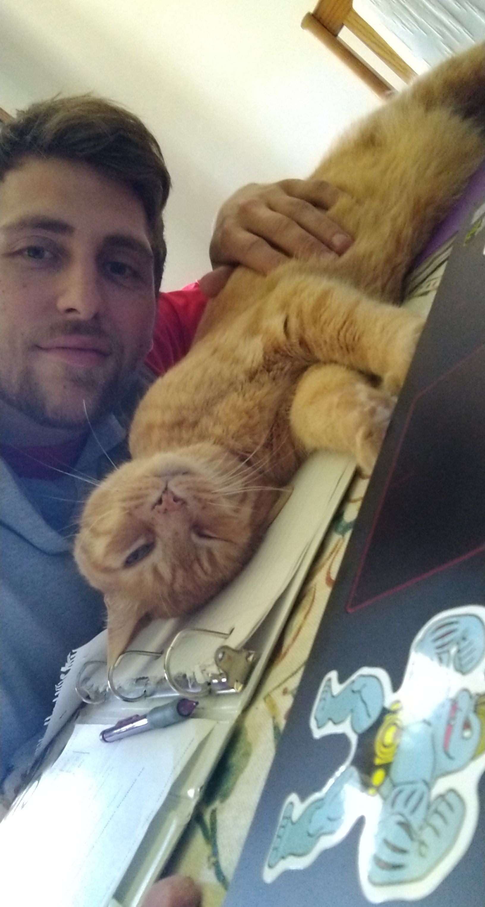
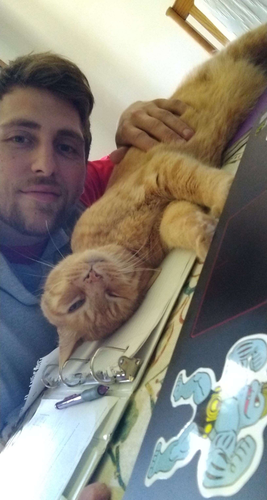

A Little More About Me:
I conducted my undergraduate studies at the University of Illinois at Chicago (UIC) from the Fall of 2016 to the Spring of 2020, where I graduated with honors as a math and computer science major and physics minor. The Summer following my graduation, I was fortunate to enough to secure an internship at Argonne National Labratory. There I researched random matrix theory, developed Kbase applications, and learned what it means to work in a professional scientific enviornment. After Argonne I wanted to refine my technical and analytical skills, so I enrolled in the graduate program at UIC, where I'm currently working towards a Master's in Mathematical Computer Science.
Nowadays I spend my productive time fooling around with app/web development and trying to solve pesky NP-Hard problems :) I'm also working with a close friend to help grow his 501(c)(3) non-profit charity, Better Natures.